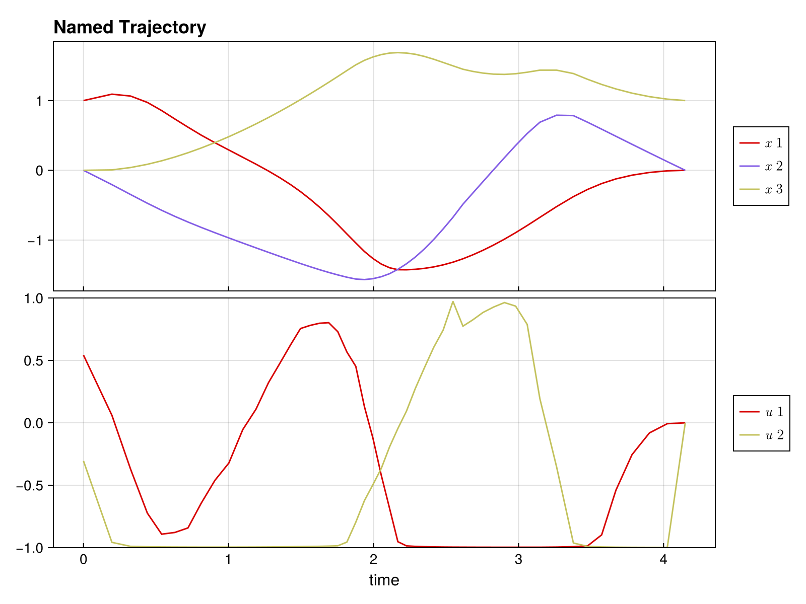

Complete Example: Time-Optimal Bilinear Control
This example demonstrates solving a time-optimal trajectory optimization problem with:
- Multiple control inputs with bounds
- Free time steps (variable Δt)
- Combined objective (control effort + minimum time)
using DirectTrajOpt
using NamedTrajectories
using LinearAlgebra
using CairoMakieProblem Setup
System: 3D oscillator with 2 control inputs
\[\dot{x} = (G_0 + u_1 G_1 + u_2 G_2) x\]
Goal: Drive from [1, 0, 0] to [0, 0, 1] minimizing ∫ ||u||² dt + w·T
Constraints:-1 ≤ u ≤ 1, 0.05 ≤ Δt ≤ 0.3
Define System Dynamics
G_drift = [
0.0 1.0 0.0;
-1.0 0.0 0.0;
0.0 0.0 -0.1
]
G_drives = [
[1.0 0.0 0.0;
0.0 0.0 0.0;
0.0 0.0 0.0],
[0.0 0.0 0.0;
0.0 0.0 1.0;
0.0 1.0 0.0]
]
G = u -> G_drift + sum(u .* G_drives)#2 (generic function with 1 method)Create Trajectory
N = 50
x_init = [1.0, 0.0, 0.0]
x_goal = [0.0, 0.0, 1.0]
x_guess = hcat([x_init + (x_goal - x_init) * (k/(N-1)) for k in 0:N-1]...)
traj = NamedTrajectory(
(
x = x_guess,
u = 0.1 * randn(2, N),
Δt = fill(0.15, N)
);
timestep=:Δt,
controls=(:u, :Δt),
initial=(x = x_init,),
final=(x = x_goal,),
bounds=(
u = 1.0,
Δt = (0.05, 0.3)
)
)N = 50, (x = 1:3, u = 4:5, → Δt = 6:6)Build and Solve Problem
integrator = BilinearIntegrator(G, traj, :x, :u)
obj = (
QuadraticRegularizer(:u, traj, 1.0) +
0.5 * MinimumTimeObjective(traj, 1.0)
)
prob = DirectTrajOptProblem(traj, obj, integrator)
solve!(prob; max_iter=50) initializing optimizer...
applying constraint: initial value of x
applying constraint: final value of x
applying constraint: bounds on u
applying constraint: bounds on Δt
******************************************************************************
This program contains Ipopt, a library for large-scale nonlinear optimization.
Ipopt is released as open source code under the Eclipse Public License (EPL).
For more information visit https://github.com/coin-or/Ipopt
******************************************************************************
This is Ipopt version 3.14.19, running with linear solver MUMPS 5.8.1.
Number of nonzeros in equality constraint Jacobian...: 1017
Number of nonzeros in inequality constraint Jacobian.: 0
Number of nonzeros in Lagrangian Hessian.............: 1076
Total number of variables............................: 294
variables with only lower bounds: 0
variables with lower and upper bounds: 150
variables with only upper bounds: 0
Total number of equality constraints.................: 147
Total number of inequality constraints...............: 0
inequality constraints with only lower bounds: 0
inequality constraints with lower and upper bounds: 0
inequality constraints with only upper bounds: 0
iter objective inf_pr inf_du lg(mu) ||d|| lg(rg) alpha_du alpha_pr ls
0 3.6848266e+00 1.51e-01 7.88e-02 0.0 0.00e+00 - 0.00e+00 0.00e+00 0
1 2.7293255e+00 1.34e-01 7.83e-01 -4.0 2.91e+00 - 1.48e-01 1.16e-01f 1
2 2.4319241e+00 1.15e-01 3.11e+00 -0.6 1.84e+00 - 4.07e-01 1.41e-01h 1
3 2.4055875e+00 1.04e-01 4.78e+00 -4.0 7.29e+00 - 8.79e-02 9.91e-02h 1
4 2.3282151e+00 9.79e-02 2.58e+01 -0.2 2.71e+00 0.0 5.22e-01 6.19e-02f 1
5 2.4974221e+00 8.62e-02 7.67e+01 0.1 3.52e+00 - 9.59e-01 2.28e-01h 1
6 2.5067067e+00 8.62e-02 6.80e+01 -4.0 5.46e+02 - 4.59e-04 3.45e-05h 6
7 2.6289290e+00 8.58e-02 6.21e+01 -4.0 4.82e+01 -0.5 9.16e-03 5.41e-03h 3
8 2.8124145e+00 6.92e-02 2.52e+02 0.6 3.48e+00 0.9 1.00e+00 1.97e-01h 1
9 3.1368709e+00 1.16e-01 1.74e+02 -4.0 1.07e+00 - 4.38e-01 1.00e+00h 1
iter objective inf_pr inf_du lg(mu) ||d|| lg(rg) alpha_du alpha_pr ls
10 3.0735666e+00 8.42e-02 4.55e+02 0.8 3.65e-01 3.1 1.00e+00 2.69e-01f 1
11 3.0524620e+00 4.49e-02 1.24e+02 1.1 4.97e-01 2.6 8.84e-01 6.61e-01f 1
12 3.0724245e+00 2.86e-03 6.02e+01 0.3 2.02e-01 2.1 9.81e-01 1.00e+00f 1
13 3.0719040e+00 3.02e-06 9.24e-01 -1.8 2.83e-03 1.7 9.84e-01 1.00e+00h 1
14 3.0610431e+00 2.81e-05 9.78e-02 -2.8 6.60e-03 1.2 1.00e+00 1.00e+00f 1
15 3.0263366e+00 2.67e-04 1.14e-01 -4.0 2.29e-02 0.7 1.00e+00 1.00e+00f 1
16 2.9409438e+00 1.36e-03 9.74e-02 -4.0 5.96e-02 0.2 1.00e+00 1.00e+00f 1
17 2.8862542e+00 1.19e-03 8.58e-02 -4.0 1.34e-01 -0.3 1.00e+00 3.37e-01h 1
18 2.8132415e+00 2.05e-03 7.38e-02 -4.0 2.83e-01 -0.7 1.00e+00 2.47e-01f 1
19 2.7463178e+00 2.20e-03 6.27e-02 -4.0 1.19e-01 -0.3 1.00e+00 6.12e-01h 1
iter objective inf_pr inf_du lg(mu) ||d|| lg(rg) alpha_du alpha_pr ls
20 2.7166307e+00 2.17e-03 5.76e-02 -4.0 2.49e-01 -0.8 1.00e+00 1.54e-01h 1
21 2.6797959e+00 1.76e-03 4.80e-02 -4.0 1.03e-01 -0.4 1.00e+00 5.29e-01h 1
22 2.6335200e+00 3.30e-03 5.26e-02 -4.0 2.63e-01 -0.8 1.00e+00 3.10e-01h 1
23 2.6205443e+00 2.49e-03 4.28e-02 -4.0 9.20e-02 -0.4 1.00e+00 2.97e-01h 1
24 2.5581270e+00 6.25e-03 5.74e-02 -4.0 2.42e-01 -0.9 1.00e+00 5.45e-01h 1
25 2.5377409e+00 1.99e-03 2.98e-02 -4.0 7.86e-02 -0.5 1.00e+00 7.24e-01h 1
26 2.4969584e+00 3.10e-03 5.17e-02 -4.0 1.90e-01 -0.9 1.00e+00 5.21e-01h 1
27 2.4790988e+00 5.21e-04 2.06e-02 -4.0 6.28e-02 -0.5 1.00e+00 9.17e-01h 1
28 2.4670016e+00 6.63e-04 2.55e-02 -4.0 1.59e-01 -1.0 1.00e+00 2.49e-01h 1
29 2.4557647e+00 3.57e-04 1.48e-02 -4.0 5.33e-02 -0.6 1.00e+00 7.09e-01h 1
iter objective inf_pr inf_du lg(mu) ||d|| lg(rg) alpha_du alpha_pr ls
30 2.4234274e+00 3.17e-03 2.75e-02 -3.7 1.49e-01 -1.0 1.00e+00 8.79e-01h 1
31 2.4116389e+00 3.98e-04 1.25e-02 -4.0 5.12e-02 -0.6 1.00e+00 1.00e+00h 1
32 2.3914955e+00 1.13e-03 3.00e-02 -4.0 1.61e-01 -1.1 1.00e+00 7.08e-01h 1
33 2.3838609e+00 1.88e-04 1.24e-02 -4.0 5.68e-02 -0.7 1.00e+00 1.00e+00h 1
34 2.3641414e+00 1.04e-03 1.97e-02 -4.0 1.52e-01 -1.1 1.00e+00 9.67e-01h 1
35 2.3443599e+00 8.61e-03 3.58e-02 -4.0 3.35e-01 -1.6 1.41e-01 4.50e-01h 1
36 2.3439674e+00 1.34e-04 2.93e-02 -4.0 6.02e-02 -0.3 1.00e+00 1.00e+00h 1
37 2.3392062e+00 1.64e-04 8.08e-03 -4.0 4.70e-02 -0.8 1.00e+00 1.00e+00h 1
38 2.3214480e+00 9.93e-02 1.01e-01 -4.0 4.42e-01 -1.2 1.41e-01 9.45e-01h 1
39 2.3310116e+00 2.02e-03 8.23e-02 -4.0 7.31e-02 0.1 1.00e+00 1.00e+00h 1
iter objective inf_pr inf_du lg(mu) ||d|| lg(rg) alpha_du alpha_pr ls
40 2.3367258e+00 1.39e-04 1.00e-02 -3.4 2.53e-02 -0.4 9.54e-01 1.00e+00h 1
41 2.3270594e+00 3.23e-03 1.84e-02 -3.9 8.32e-02 -0.9 9.97e-01 1.00e+00h 1
42 2.3234762e+00 3.52e-05 6.47e-03 -4.0 1.79e-02 -0.4 1.00e+00 1.00e+00h 1
43 2.3198514e+00 8.43e-03 3.36e-02 -4.0 3.57e-01 -0.9 9.11e-01 3.94e-01h 1
44 2.3187066e+00 2.85e-04 5.85e-03 -4.0 3.20e-02 -0.5 1.00e+00 1.00e+00h 1
45 2.3148045e+00 2.35e-04 5.28e-03 -4.0 4.94e-02 -1.0 1.00e+00 1.00e+00h 1
46 2.3135443e+00 1.03e-05 5.07e-03 -4.0 1.77e-02 -0.5 1.00e+00 1.00e+00h 1
47 2.3130666e+00 1.96e-06 5.00e-03 -4.0 6.57e-03 -0.1 1.00e+00 1.00e+00h 1
48 2.3117033e+00 7.37e-06 4.86e-03 -4.0 1.92e-02 -0.6 1.00e+00 1.00e+00h 1
49 2.3112152e+00 1.59e-06 4.79e-03 -4.0 7.08e-03 -0.2 1.00e+00 1.00e+00h 1
iter objective inf_pr inf_du lg(mu) ||d|| lg(rg) alpha_du alpha_pr ls
50 2.3098109e+00 8.62e-06 4.64e-03 -4.0 2.06e-02 -0.6 1.00e+00 1.00e+00h 1
Number of Iterations....: 50
(scaled) (unscaled)
Objective...............: 2.3098108679876130e+00 2.3098108679876130e+00
Dual infeasibility......: 4.6379179677630087e-03 4.6379179677630087e-03
Constraint violation....: 8.6208531000497857e-06 8.6208531000497857e-06
Variable bound violation: 0.0000000000000000e+00 0.0000000000000000e+00
Complementarity.........: 9.9999999999987740e-05 9.9999999999987740e-05
Overall NLP error.......: 4.6379179677630087e-03 4.6379179677630087e-03
Number of objective function evaluations = 61
Number of objective gradient evaluations = 51
Number of equality constraint evaluations = 61
Number of inequality constraint evaluations = 0
Number of equality constraint Jacobian evaluations = 51
Number of inequality constraint Jacobian evaluations = 0
Number of Lagrangian Hessian evaluations = 50
Total seconds in IPOPT = 11.327
EXIT: Maximum Number of Iterations Exceeded.Visualize Solution
plot(prob.trajectory) # See NamedTrajectories.jl documentation for plotting options
Analyze Solution
x_sol = prob.trajectory.x
u_sol = prob.trajectory.u
Δt_sol = prob.trajectory.Δt
println("Solution found!")
println(" Total time: $(sum(Δt_sol)) seconds")
println(" Δt range: [$(minimum(Δt_sol)), $(maximum(Δt_sol))]")
println(" Max |u₁|: $(maximum(abs.(u_sol[1,:])))")
println(" Max |u₂|: $(maximum(abs.(u_sol[2,:])))")
println(" Final error: $(norm(x_sol[:,end] - x_goal))")Solution found!
Total time: 4.324136045888517 seconds
Δt range: [0.05711896070061293, 0.19594499748049368]
Max |u₁|: 0.9968465219820712
Max |u₂|: 0.9983214063916356
Final error: 0.0Key Insights
Free time optimization: Variable Δt allows the optimizer to adjust trajectory speed, with shorter steps where control is needed and longer steps in smooth regions.
Control bounds: With time weight 0.5, controls don't fully saturate. Increase the weight to push toward bang-bang control.
Combined objectives: The + operator makes it easy to balance multiple goals.
Exercises
1. Bang-bang control: Set time weight to 5.0 - do controls saturate the bounds?
2. Fixed time: Remove Δt from controls and compare total time.
3. Add waypoint: Require passing through [0.5, 0, 0.5] at the midpoint:
constraint = NonlinearKnotPointConstraint(
x -> x - [0.5, 0, 0.5], :x, traj;
times=[div(N,2)], equality=true
)
prob = DirectTrajOptProblem(traj, obj, integrator; constraints=[constraint])4. Different goal: Try reaching [0, 1, 0] or [0.5, 0.5, 0.5]
5. Tighter bounds: Use bounds=(u = 0.5, Δt = (0.05, 0.3)) - how does time change?
This page was generated using Literate.jl.